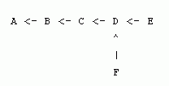
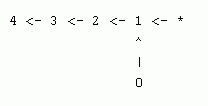
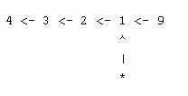
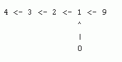

The cows keep getting in trouble by taking rides on Farmer John's tractor, so he has hidden the keys to the tractor in a fancy new safe in his office. Undeterred, the cows have vowed to try and break into this safe. The safe is protected by a rather complicated passcode system. The passcode entry system is arranged as a rooted tree of N (1 <= N <= 20,000) nodes, each of which requires a digit between 0 and 9. The nodes are indexed 0..N-1. The only information that the cows have is that certain sequences of length 5 do not occur along particular paths upwards through the tree. For instance, suppose the tree is the following (rooted at A):

The cows might know that the sequence 01234 does not occur starting at F, and that the sequence 91234 does not occur starting at E. This information rules out 19 possible passcodes: all those of the form

or

which gives 19 once we account for the fact that

appears twice. Given M (1 <= M <= 50,000) length-5 sequences, together with their starting nodes in the tree, help the cows figure out how many passcodes have been ruled out. You should compute your answer modulo 1234567.